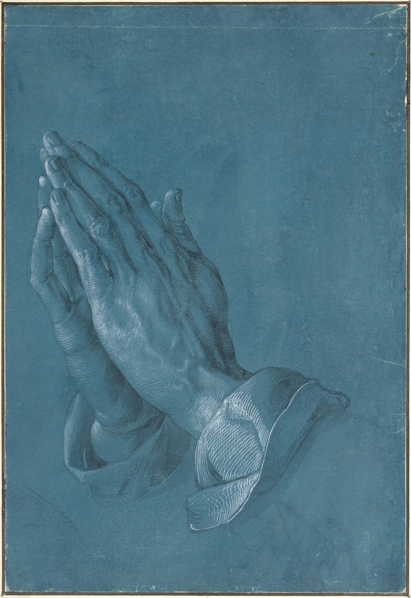

A HAPTIC ART ATLAS
目で、
触れる。
絵具の厚み、乾いた線、冷たい石、触れ合う直前の指先。
22人の作家を通して、視覚の奥に眠る触覚をひらく。
SCROLL TO ENTER
INTRODUCTION
作品を見るとき、 私たちの皮膚もまた、 静かに見ている。
画面の上で指を動かすと、痕跡が残ります。それは消えながら、次の作品へとあなたを導きます。

EPILOGUE
最後に残るのは、
作品ではなく、感覚かもしれない。
CURATED FROM “触覚と手の美術図鑑” · PERSONAL DIGITAL EXHIBITION